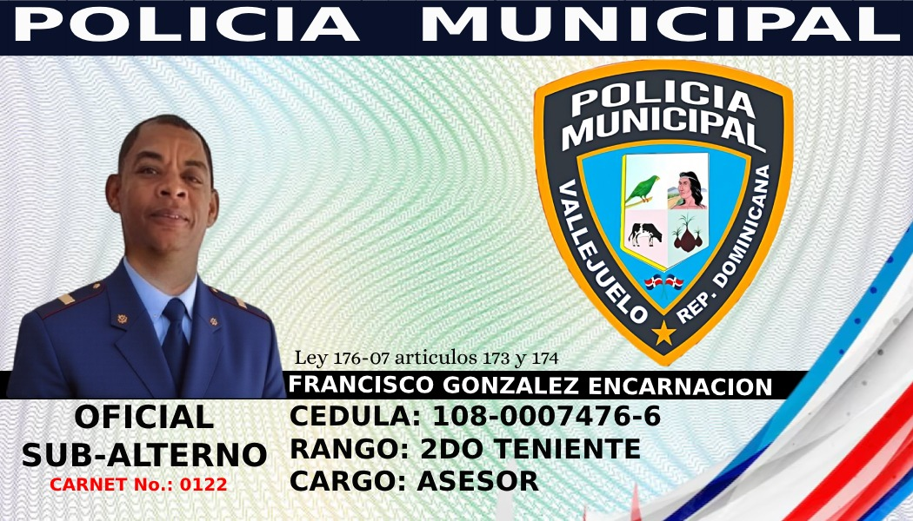
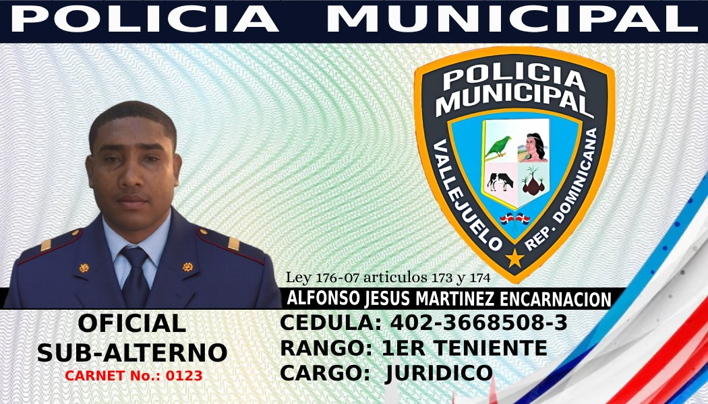
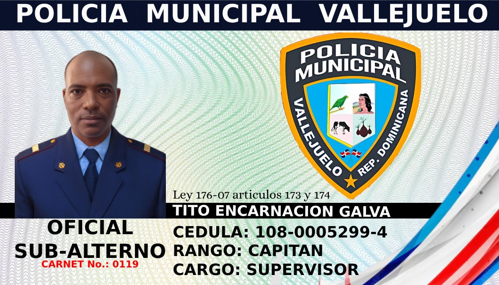
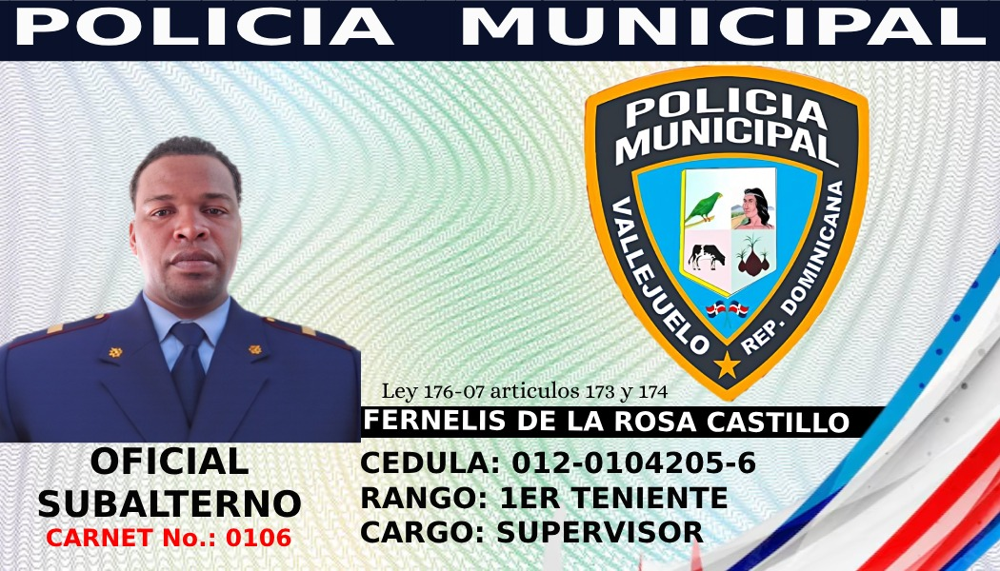
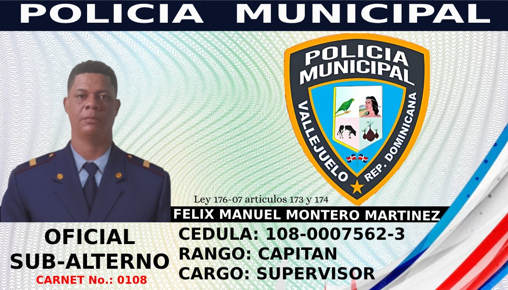

Ayuntamiento Municipal de VallejueloPolicía Municipal
Agentes Activos — Oficiales Subalternos
Solo se muestran agentes activos.

Francisco Gonzalez Encarnacion — 2do Teniente

Alfonso Jesus Martinez Encarnacion — 1er Teniente

Tito Encarnacion Galva — Capitan

Fernelis de la Rosa Castillo — 1er Teniente

Félix Manuel Montero Martinez — Capitan